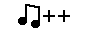

uksz's webring
webring.uksz.org is a new, open webring for people, who want to go back in time, or live through an internet era they weren't there for.
This project seeks to connect people across the internet with others, who share the same sentiment
How do I join?
1. Put our widget on your website
Widget HTML:


2. Send your application through our Discord
or an e-mail to
Example:
Good-to-know info:
• Link to the page containing the ukszWeb widget, so it's easy to click through the webring
• "Slug" is your "webring name". it's visible in the the list below and in the webring's link eg. You claim "alice" as your slug, so the link to the person next to you would be: webring.uksz.org/r?alice&next
• Keep your slug and the linked page PG - We want this website to be SFW
• Put ukszWeb's widget on your website before applying, so we can confirm you own the website and that you will have links ready when you get accepted
• We only accept websites that don't contain generative AI's output
• We don't accept websites promoting violence/witchhunting/doxxing and other despicable actions
• We use HI (Human Intelligence) to determine if the website meets criteria and is fit to be accepted into the webring. Please allow up to 18h to get your result
| slug | website | button |
|---|---|---|
| ukszWeb | webring.uksz.org | |
| uksz | uksz.org |  |
| m0th | mothtonoth.art |  |
| m4ddy | maddyka.nekoweb.org |  |
| error | oerrorpage.neocities.org |  |
| yoyledotcity | yoyle.city |  |
| YEESITE | yeepsite.nekoweb.org |  |
| ockolus | ockolus.neocities.org | |
| Nameless | music-and-more-and-more.nekoweb.org |  |
made with ♥ by uksz.org